TỔNG QUAN
HƯỚNG DẪN VẬN HÀNH THIẾT BỊ MENTOR UT (PAUT)
Phiên bản: 1.0
Ngày cập nhật: 13/01/2026
Phạm vi: Tài liệu lưu hành nội bộ
Hướng dẫn hiệu chuẩn và vận hành kiểm tra mối hàn.
MỤC LỤC
MỤC LỤC
KHỐI 1: TỔNG QUAN & GIAO DIỆN HIỆU CHUẨN
KHỐI 2: KIỂM TRA BIẾN TỬ CHẾT (DEAD ELEMENT)
KHỐI 3: HIỆU CHUẨN VẬN TỐC (VELOCITY)
KHỐI 4: HIỆU CHUẨN ĐỘ TRỄ NÊM (WEDGE DELAY)
KHỐI 5: XÂY DỰNG ĐƯỜNG TCG (TIME CORRECTION GAIN)
KHỐI 6: HIỆU CHUẨN ĐỘ NHẠY (SENSITIVITY)
KHỐI 7: HIỆU CHUẨN ENCODER
KHỐI 8: THIẾT LẬP THÔNG SỐ QUÉT & LƯU FILE
KHỐI 9: QUÉT MỐI HÀN, TOFD & QUẢN LÝ DỮ LIỆU
KHỐI 1 – VẬN HÀNH THIẾT BỊ MENTOR UT
KHỐI 1 – VẬN HÀNH THIẾT BỊ MENTOR UT
Cài đặt, nâng cấp ứng dụng
Để cài đặt / nâng cấp ứng dụng, thực hiện trình tự theo các bước sau:
Nhấn và giữ nút nguồn (vị trí 1 – Hình 2) để khởi động thiết bị
Giao diện thiết bị sau khi khởi động như hình 1

Hình 1: Giao diện sau khi khởi động thiết bị
Nhấn chọn biểu tượng  trên màn hình. Hộp thoại cài đặt ứng dụng được hiển thị như hình 2
trên màn hình. Hộp thoại cài đặt ứng dụng được hiển thị như hình 2
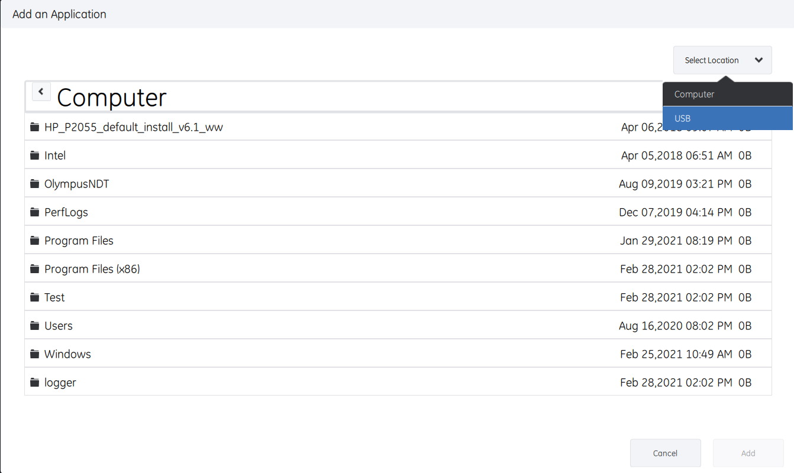
Hình 2: Hộp thoại cài đặt ứng dụng
Nhấn Select Location và chọn file iwp (ứng dụng) cần cài đặt
Chọn ứng dụng muốn cài đặt và nhấn “Add”
Ví dụ: Trên hình 3, chọn cài đặt ứng dụng “Weld 3.5”

Hình 5: Chọn ứng dụng cần cài đặt
Sau khi cài đặt, trên màn hình hiển thị thông báo cài đặt ứng dụng thành công “Successfully installed the application” và biểu tượng của ứng dụng hiển thị trên màn hình giao diện của thiết bị (Hình 6)
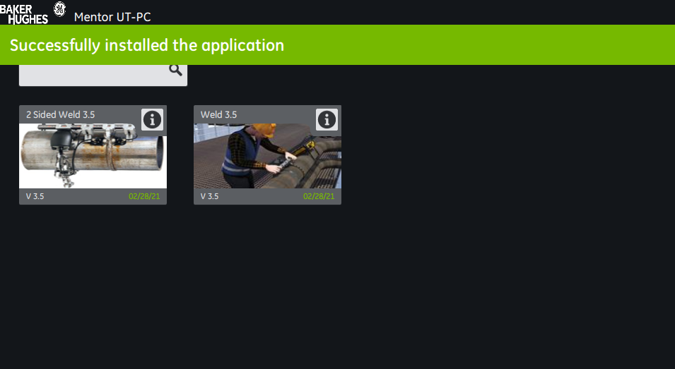
Hình 6: Cài đặt ứng dụng thành công
Khởi động ứng dụng
Ứng dụng sau khi được cài đặt thành công được hiển thị trên giao diện màn hình. Nhấn chọn vào ứng dụng để bắt đầu
Cửa sổ ứng dụng được chọn hiển thị như hình 7
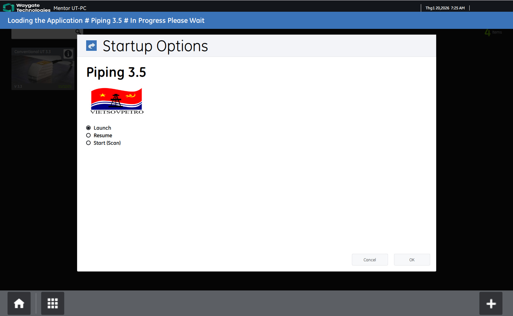
Hình 7: Cửa sổ ứng dụng “Weld 3.5”
Chọn “Launch” hoặc “Start (Cover)” để chạy ứng dụng từ đầu
Chọn “Resume” để tiếp tục ứng dụng từ phần đã tạm dừng trước đó
Sau đó nhấn chọn “OK”.

Hình 8: Giao diện ứng dụng “Weld 3.5”
Quay về màn hình giao diện của thiết bị
Cài đặt hệ thống của thiết bị, bao gồm cài đặt hiển thị, thời gian, ngôn ngữ, đơn vị sử dụng trên thiết bị,...(hình 9)
Các bước hiệu chuẩn file cài đặt.
Trở về bước thực hiện trước
Chuyển tới bước thực hiện tiếp theo
Lưu / mở file cài đặt hoặc file dữ liệu
Chụp ảnh màn hình / thực hiện báo cáo
Sau khi cài đặt hoàn tất, nhấn nút  để quay về
để quay về

Hình 9: Phần cài đặt hệ thống của thiết bị
Nhấn chọn (nút 5 – hình 8) để chuyển tới bước “Application checklist”.
Kiểm tra ứng dụng theo danh sách các thông số đã thiết lập trước cho ứng dụng bằng phần mềm Mentor Creator (hoặc có thể điều chỉnh lại các thông số thiết lập trong bước tiếp theo).

Hình 10: Kiểm tra danh sách thông số cài đặt
Sau khi kiểm tra hoàn tất, nhấn chọn để chuyển tới bước “Danh sách các bước hiệu chuẩn” (“Table of Contents”)
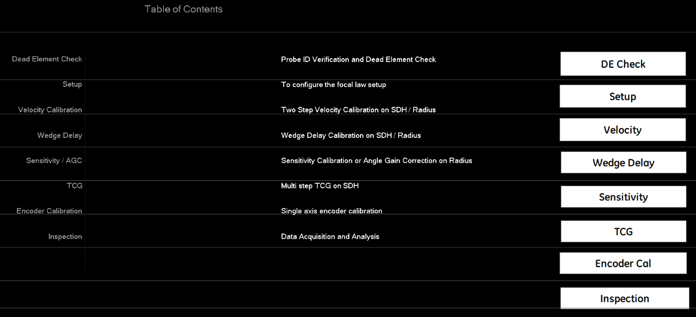
Hình 11: Danh sách các bước hiệu chuẩn
KHỐI 1 – TỔNG QUAN & GIAO DIỆN HIỆU CHUẨN
KHỐI 1 – TỔNG QUAN & GIAO DIỆN HIỆU CHUẨN
1.1. LƯU Ý QUAN TRỌNG TRƯỚC KHI BẮT ĐẦU
Người vận hành phải thiết lập lại thông số của từng Group một cách độc lập.
Ví dụ: Thông số mối hàn (Part Setup) sau khi cài cho Group 1 thì phải chuyển sang Group 2 và cài đặt thủ công (manual) các thông số tương tự.
Điều này áp dụng tương tự với tất cả các quy trình hiệu chuẩn khác như: Velocity, Wedge Delay, Sensitivity, TCG…
1.2. THANH TRẠNG THÁI HIỆU CHUẨN (STATUS BAR)


Vị trí: Nằm trên cùng màn hình giao diện.
Chức năng: Hiển thị tiến trình của các hạng mục cần hiệu chuẩn.
● Màu cam: Chưa hiệu chuẩn.
● Màu xanh lá: Đã hiệu chuẩn.
Thứ tự các biểu tượng (Từ trái qua phải):
Velocity: Hiệu chuẩn Vận tốc.
Wedge Delay: Hiệu chuẩn Độ trễ nêm.
TCG: Hiệu chuẩn đường cong TCG.
Sensitivity: Hiệu chuẩn Độ nhạy.
Encoder: Hiệu chuẩn bộ mã hóa vị trí (Encoder).
1.3. CÁC BIỂU TƯỢNG CHỨC NĂNG
Trong quá trình hiệu chuẩn, khi nhấn chạm vào cửa sổ bất kỳ trên màn hình, các biểu tượng sau sẽ hiển thị để điều chỉnh thông số:
Biểu tượng | Ý nghĩa / Chức năng |
Hiển thị thông số cài đặt cho đầu dò. | |
| Hiển thị thông số cài đặt cho nêm. |
| Hiển thị thông số cài đặt cho luật phát. |
| Hiển thị thông số cài đặt cho kênh phát. |
| Hiển thị thông số cài đặt cho mối hàn (Part Setup). |
| Hiển thị thông số cài đặt cho hiệu chuẩn. |
| Hiển thị thông số cài đặt cho chùm sóng âm (Gain, Range) |
| Tùy chọn hiển thị (dải mã hóa màu, cấu hình hiển thị). |
| Hiển thị thông số cài đặt cho các cổng sóng âm (Gate) |
KHỐI 2 – KIỂM TRA BIẾN TỬ CHẾT (DEAD ELEMENT CHECK)
KHỐI 2 – KIỂM TRA BIẾN TỬ CHẾT (DEAD ELEMENT CHECK)
2.1. MỤC TIÊU
Xác định tình trạng sức khỏe của đầu dò, đảm bảo không có biến tử hỏng trước khi kiểm tra.
2.2. CHUẨN BỊ
Đầu dò kết nối đúng cách vào thiết bị (nghe tiếng "tách").
Thông số khai báo phù hợp với đầu dò PAUT đang sử dụng.
2.3. CHI TIẾT THAO TÁC
Truy cập chức năng: Nhấn biểu tượng  -> Chọn Dead El (hoặc nhấn nút 3 lần để chuyển tới bước này).
-> Chọn Dead El (hoặc nhấn nút 3 lần để chuyển tới bước này).
Màn hình hiển thị thông báo:
Thiết lập cổng (Gate):
Trên A-Scan xuất hiện xung bắt đầu.
Nhấn giữ và kéo cổng Gate A sao cho bao phủ toàn bộ đỉnh xung.
Tăng biên độ xung lên ~80% FSH (chiều cao màn hình).
Trên S-Scan: Đảm bảo cổng màu xanh lá phải bao phủ hết dải xung của các biến tử.
Thực hiện: Nhấn biểu tượng  . Quá trình diễn ra tự động.
. Quá trình diễn ra tự động.
2.4. KẾT QUẢ
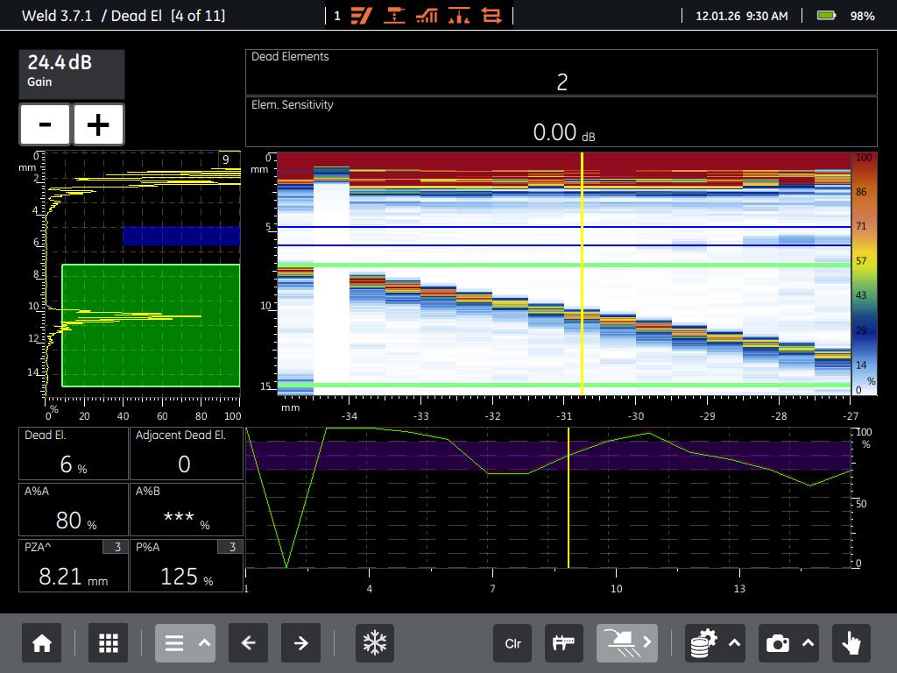
Màn hình hiển thị khi check biến tử (Ví dụ: Chết biến tử số 2 / Dead El No.2)
2.5. LỖI THƯỜNG GẶP & XỬ LÝ

Triệu chứng: Thông báo "Attached Probe is not good..."
Nguyên nhân/Xử lý: Số lượng biến tử chết vượt mức cho phép. Vệ sinh lại đầu dò hoặc thay đầu dò mới.
KHỐI 3 – THIẾT LẬP THÔNG SỐ CƠ BẢN VÀ HIỆU CHUẨN VẬN TỐC (VELOCITY)
KHỐI 3 – THIẾT LẬP THÔNG SỐ CƠ BẢN VÀ HIỆU CHUẨN VẬN TỐC (VELOCITY)
3.1. MỤC TIÊU
Xác định vận tốc sóng âm thực tế trong vật liệu mẫu (thường là V1 hoặc V2).
3.2. CHUẨN BỊ & LƯU Ý
Mẫu chuẩn: Khối chuẩn V1 hoặc V2 (sử dụng 2 cung tròn bán kính 50mm/100mm hoặc 25mm/50mm tùy loại).
3.3. THIẾT LẬP THÔNG SỐ CƠ BẢN (SETUP)
Trước khi vào menu Calib, cần đảm bảo các thông số sau đã nhập đúng theo Scan Plan:
Cài đặt Đầu dò (Probe): Nhập đúng Tần số (Frequency), Số lượng biến tử (Element Qty), Pitch, Elevation.
Cài đặt Nêm (Wedge): Nhập đúng Góc nêm (Wedge Angle), Vận tốc nêm (Wedge Velocity), Z-Offset, Wedge Front.
Cài đặt Luật phát (Focal Law/Group):
Type: Chọn Sectorial (Quét quạt) hoặc Linear (Quét thẳng).
Elements: Chọn biến tử bắt đầu (First) và kết thúc (Last).
Angle: Nhập góc phát, độ phân giải góc (thường là 1 độ).
Focal Distance: Nên đặt 1000mm (hội tụ vô cực) hoặc theo Scan Plan.
Cài đặt Mối hàn (Part Setup) & Pulser:
Vào menu Part Setup 
Nhập chính xác: Chiều dày vật liệu, Vận tốc sóng (Ngang/Dọc).
Geometry: Nhập các thông số vát mép (A, B, C, D..., xem hướng dẫn ở Mục 8.2)
Angle: Nhập góc vát Alpha/Beta.
 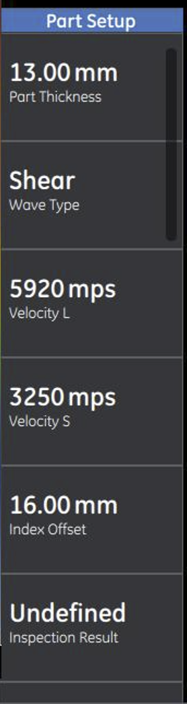 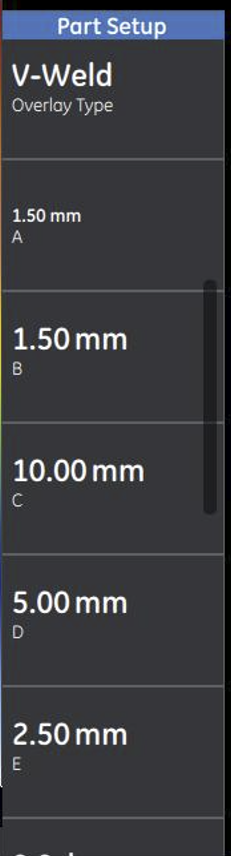
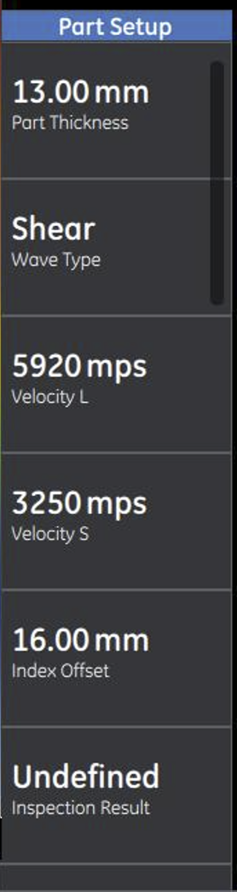 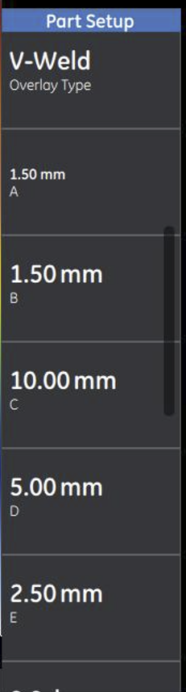  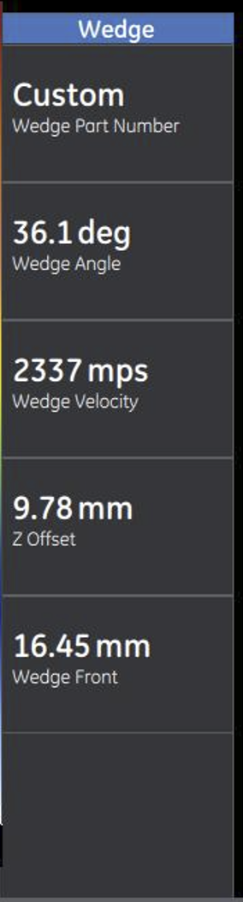
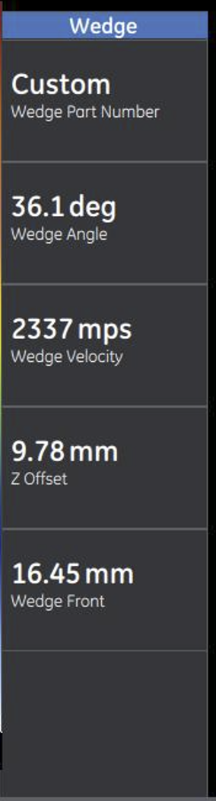 

3.4. QUY TRÌNH HIỆU CHUẨN VẬN TỐC (CALIBRATION PROCESS)
Bước 1: Truy cập Menu Hiệu chuẩn
Trên màn hình chính, nhấn biểu tượng 
Bước 2: Cài đặt thông số Hiệu chuẩn
Thông số | Giá trị cài đặt | Giải thích ý nghĩa |
Vel Cal Type | Multi Step | Chế độ hiệu chuẩn đa điểm (dùng 2 điểm mốc). |
Reflector Type | Radius | Loại phản xạ là cung tròn (do dùng mẫu V1/V2). |
Cal Block Dist / Ref 1 | 50.00 mm | Bán kính cung nhỏ (tùy mẫu V2 là 25mm hoặc 50mm). |
Cal Block Dist / Ref 2 | 100.00 mm | Bán kính cung lớn. |
Mode | Shear / Long | Chọn sóng Ngang (Shear) hoặc Dọc (Long). |
Bước 3: Thực hiện Quét
Bôi mỡ tiếp âm, đặt đầu dò lên mẫu chuẩn V1/V2.
Tìm vị trí tín hiệu cực đại (Peak) của cả 2 xung từ 2 cung tròn.
Kéo Cổng 1 (Gate A) bao trùm đỉnh xung cung nhỏ (Ref 1).
Kéo Cổng 2 (Gate B) bao trùm đỉnh xung cung lớn (Ref 2).
Bước 4: Tính toán & Lưu
Nhấn nút  . Máy tự động tính toán vận tốc mới.
. Máy tự động tính toán vận tốc mới.
Kiểm tra kết quả: Thép ~3250m/s (sóng ngang), ~5900m/s (sóng dọc).
Nếu đạt, nhấn để chuyển sang bước Độ trễ nêm.
KHỐI 4 – HIỆU CHUẨN ĐỘ TRỄ NÊM (WEDGE DELAY)
KHỐI 4 – HIỆU CHUẨN ĐỘ TRỄ NÊM (WEDGE DELAY)
4.1. MỤC TIÊU
Bù trừ thời gian sóng đi trong nêm để hiển thị đúng độ sâu và vị trí.
4.2. CHUẨN BỊ
Chọn đúng Probe/Group cần hiệu chuẩn.
Sử dụng mẫu chuẩn có cung tròn (Radius).
Đảm bảo bề mặt tiếp xúc đủ chất tiếp âm.
4.3. THIẾT LẬP THÔNG SỐ & THỰC HIỆN
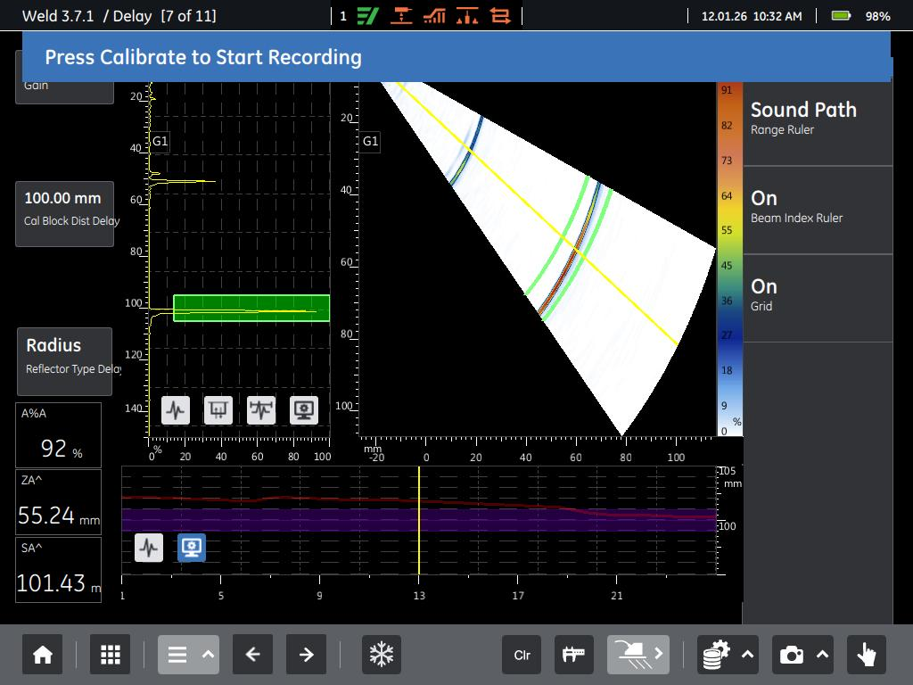
Nhấn vào biểu tượng  trên màn hình.
trên màn hình.
Cài đặt:
Cal Block Dist: Nhập bán kính cung (Ví dụ: 100mm).
Reflector Type: Radius.
Range Ruler: Chọn Sound Path (nếu dùng cung tròn) hoặc Material Depth (nếu dùng lỗ khoan cạnh).
Thực hiện:
Thông báo: "Press Calibrate to Start Recording".
Nhấn  lần 1.
lần 1.
Di chuyển đầu dò qua lại để ghi nhận xung phản hồi cực đại từ cung tròn.
Nhấn biểu tượng  sau khi thu nhận xung từ các tia sóng âm.
sau khi thu nhận xung từ các tia sóng âm.
Di chuyển đầu dò ghi nhận lại toàn bộ xung phản hồi từ các tia sóng âm để kiểm tra lại quá trình hiệu chuẩn. Nếu chưa đạt yêu cầu, nhấn vào biểu tượng  để máy ghi nhận tiếp tín hiệu mới.
để máy ghi nhận tiếp tín hiệu mới.
Khi chạy xong, nhấn biểu tượng  , dòng thông báo “Delay Recorded” sẽ hiển thị trên màn hình khi Calib hoàn tất.
, dòng thông báo “Delay Recorded” sẽ hiển thị trên màn hình khi Calib hoàn tất.
Kiểm tra:
Đường cong hiệu chuẩn (trên màn hình) phải mượt, không bị gãy khúc.
Biểu tượng hiệu chuẩn chuyển sang màu xanh lá cây.

Nhấn biểu tượng để sang bước tiếp theo.
KHỐI 5 – XÂY DỰNG ĐƯỜNG TCG (TIME CORRECTION GAIN)
KHỐI 5 – XÂY DỰNG ĐƯỜNG TCG (TIME CORRECTION GAIN)
5.1. MỤC TIÊU
Đồng nhất biên độ xung phản hồi theo độ sâu (làm đều độ nhạy cho các lỗ khoan ở độ sâu khác nhau).
5.2. CHUẨN BỊ
Mẫu chuẩn có các lỗ khoan cạnh (SDH) ở các độ sâu khác nhau (Ví dụ: 15mm, 30mm, 45mm...).
Đã hoàn tất hiệu chuẩn Vận tốc và Độ trễ nêm.
5.3. THIẾT LẬP THÔNG SỐ
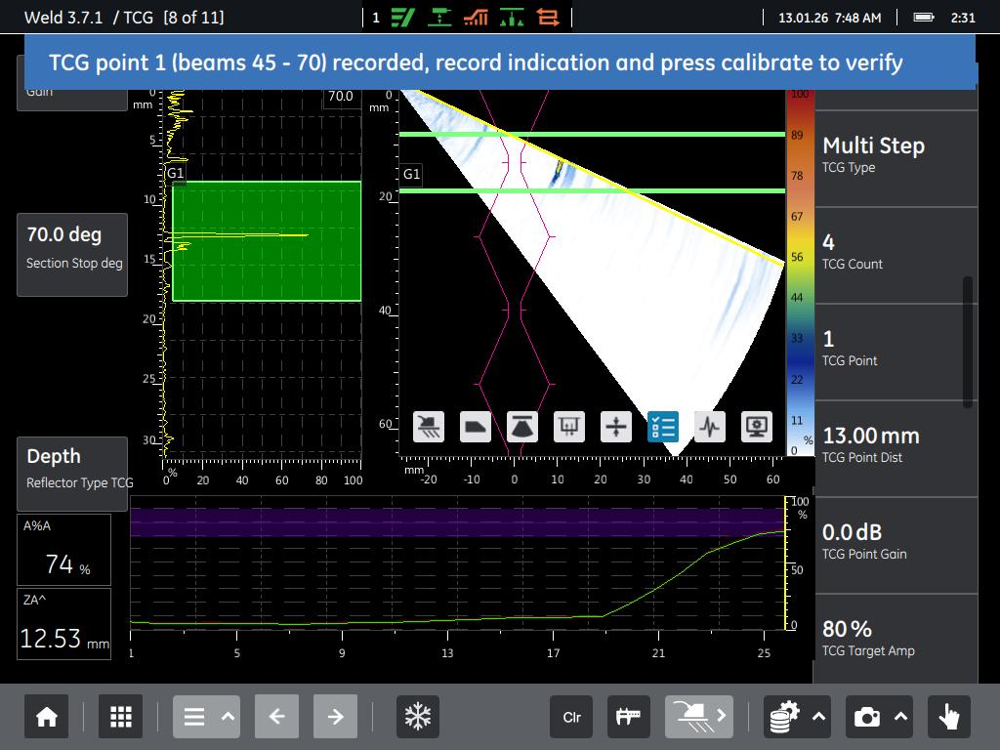
Thông số | Giá trị cài đặt | Giải thích |
Reflector Type | Depth | Sử dụng lỗ khoan cạnh (SDH). |
TCG Type | Multi Step | Xây dựng đường cong qua nhiều điểm độ sâu. |
TCG Count | (Tổng số điểm) | Nhập tổng số lỗ khoan (Ví dụ: 3). Lưu ý: Khai báo bao nhiêu điểm phải chạy bấy nhiêu. |
Range Ruler | Material Depth | BẮT BUỘC để hiển thị theo độ sâu vật liệu. |
5.4. QUY TRÌNH THAO TÁC
Trước khi bắt đầu quét, tại giao diện TCG, cần thiết lập:
TCG Count: Nhập tổng số lỗ khoan cần xây dựng đường cong (Ví dụ: 3 điểm, 4 điểm...).
⚠️ LƯU Ý QUAN TRỌNG:
Bạn khai báo bao nhiêu điểm (TCG Count) thì bắt buộc phải thực hiện quét đủ bấy nhiêu điểm. Không được bỏ dở giữa chừng.
Phần mềm Mentor không thể cắt góc để Calib từng góc nhỏ giống như MX2 được. Nên để Gate nhỏ khi calib những lỗ sâu.
Bước 1: Điểm đầu tiên (Point 1)
Nhấn  để bắt đầu.
để bắt đầu.
TCG Point Dist: Nhập độ sâu lỗ khoan số 1 (Ví dụ: 13.00 mm).
Di chuyển đầu dò tìm xung cực đại của lỗ 1 (Lưu ý: Cổng (Gate) sẽ tự động nhảy về độ sâu tương ứng. Chỉ cần đảm bảo đỉnh xung nằm trong ngưỡng của cổng và không bị bão hòa.
Nhấn  . Màn hình báo "Point Recorded" (Đã ghi xong lỗ số 1)
. Màn hình báo "Point Recorded" (Đã ghi xong lỗ số 1)
Di chuyển đầu dò qua lại lỗ 1 một lần nữa để kiểm tra.
Bước 2: Các điểm tiếp theo (Point 2, 3...)
Nhấn  . Màn hình báo "Record TCG Point 2...".
. Màn hình báo "Record TCG Point 2...".
TCG Point Dist: Nhập độ sâu lỗ 2.
Di chuyển đầu dò tìm xung cực đại của lỗ 2.
Nhấn  .
.
Lặp lại cho đến hết số điểm đã khai báo.
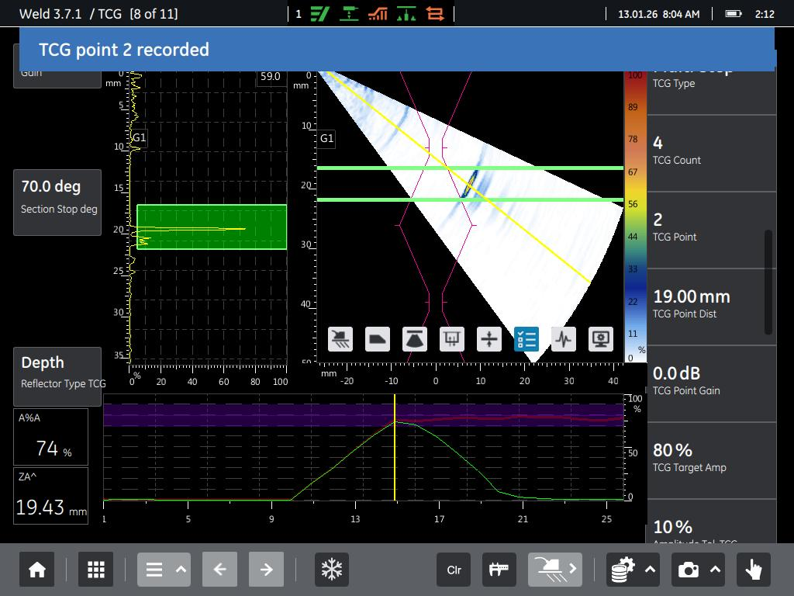
Bước 3: Hoàn tất
Sau khi thực hiện xong điểm cuối cùng, màn hình hiển thị: "TCG calibration completed successfully".
Biểu tượng TCG trên thanh trạng thái sẽ chuyển sang màu xanh lá cây.
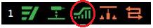
Xử lý lỗi trong quá trình quét: Nếu biên độ xung của điểm nào không đạt (quá thấp hoặc sai lệch), sau khi ghi nhận:
Nhấn lại biểu tượng Calibrate để máy hủy kết quả tạm thời của điểm đó.
Thực hiện quét lại đầu dò qua lỗ khoan và nhấn Calibrate để ghi lại.
KHỐI 6 – HIỆU CHUẨN ĐỘ NHẠY (SENSITIVITY)
KHỐI 6 – HIỆU CHUẨN ĐỘ NHẠY (SENSITIVITY)
6.1. MỤC TIÊU
Cân bằng độ nhạy giữa các góc quét (All Beams).
Hiệu chuẩn độ nhạy theo tiêu chuẩn áp dụng.
6.2. CÀI ĐẶT
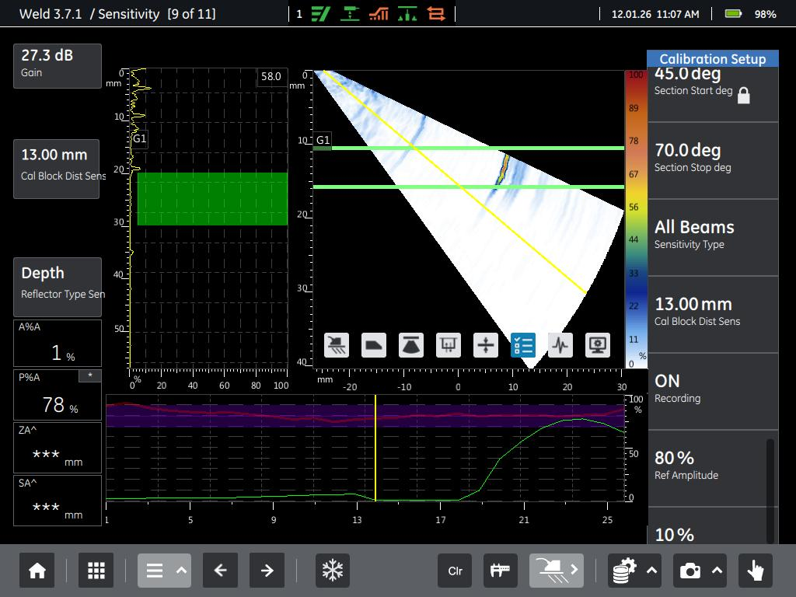
Reflector Type Sens: Depth (Hiệu chuẩn bằng độ sâu lỗ khoan/vết khấc).
Cal Block Dist Sens: Giá trị độ sâu của lỗ khoan cạnh hoặc vết khấc. Giá trị này có thể khác nhau tùy theo tiêu chuẩn chấp nhận áp dụng.
Sensitivity Type: All Beams (Hiệu chuẩn độ nhạy được áp dụng cho tất cả các chùm tia trong luật phát).
Recording:
Chọn “ON” khi hiệu chuẩn độ nhạy bằng độ sâu lỗ khoan cạnh / vết khấc.
Chọn “OFF” khi hiệu chuẩn độ nhạy bằng cung tròn (Radius) hoặc hiệu chuẩn độ nhạy cho chùm tia tuyến tính 00 bằng xung phản xạ mặt đáy. Trong trường hợp này, quá trình hiệu chuẩn không cần di chuyển đầu dò để ghi nhận xung phản hồi.
Ref Amplitude: Giá trị biên độ xung mong muốn hiệu chuẩn, thông thường được thiết lập ở mức 80% FSH.
6.3. THỰC HIỆN
Trên màn hình hiển thị thông báo:“Place the probe on calibration block and press calibrate button” (Đặt đầu dò lên mẫu hiệu chuẩn và nhấn nút hiệu chuẩn)
Nhấn nút  để bắt đầu hiệu chuẩn.
để bắt đầu hiệu chuẩn.
Di chuyển đầu dò qua lại lỗ khoan để ghi nhận xung của tất cả các chùm tia.
Nhấn nút Calibrate và di chuyển đầu dò để kiểm tra.
Yêu cầu: tất cả xung phản hồi phải nằm trong dải cho phép (vùng màu xanh).
Nếu chưa đạt, màn hình có thể báo trạng thái “Recorded” nhưng biểu tượng hiệu chuẩn chưa chuyển xanh.
Khi tất cả biên độ xung phản hồi nằm trong giới hạn cho phép (dải màu tím hiển thị trên màn hình), nhấn nút  , thông báo quá trình hiệu chuẩn thành công được hiển thị, biểu tượng hiệu chuẩn độ nhạy chuyển trạng thái sang màu xanh lá cây.
, thông báo quá trình hiệu chuẩn thành công được hiển thị, biểu tượng hiệu chuẩn độ nhạy chuyển trạng thái sang màu xanh lá cây.
Nếu có bất kỳ biên độ của xung ghi nhận nào không nằm trong giới hạn cho phép, sau khi ghi nhận các xung phản hồi, nhấn chọn  để hiệu chuẩn lại cho đến khi có thông báo hiệu chuẩn thành công được hiển thị.
để hiệu chuẩn lại cho đến khi có thông báo hiệu chuẩn thành công được hiển thị.
Nếu thành công: Thông báo "Sensitivity Calibration completed successfully". Biểu tượng chuyển sang màu xanh lá (Xem hình dưới)
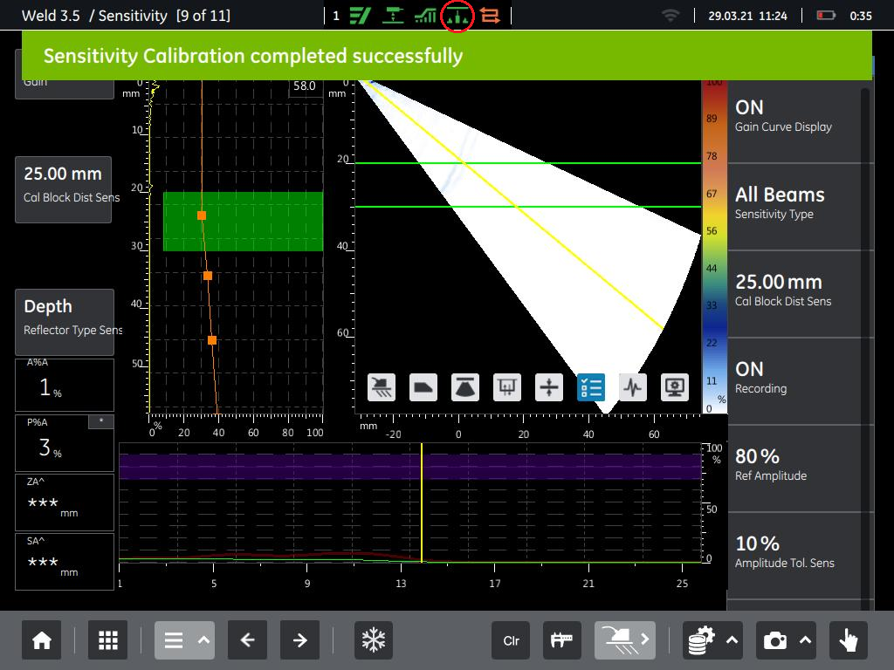
Sau khi hoàn thành nhấn biểu tượng để chuyển tới bước hiệu chuẩn tiếp theo.
KHỐI 7 – HIỆU CHUẨN ENCODER
KHỐI 7 – HIỆU CHUẨN ENCODER
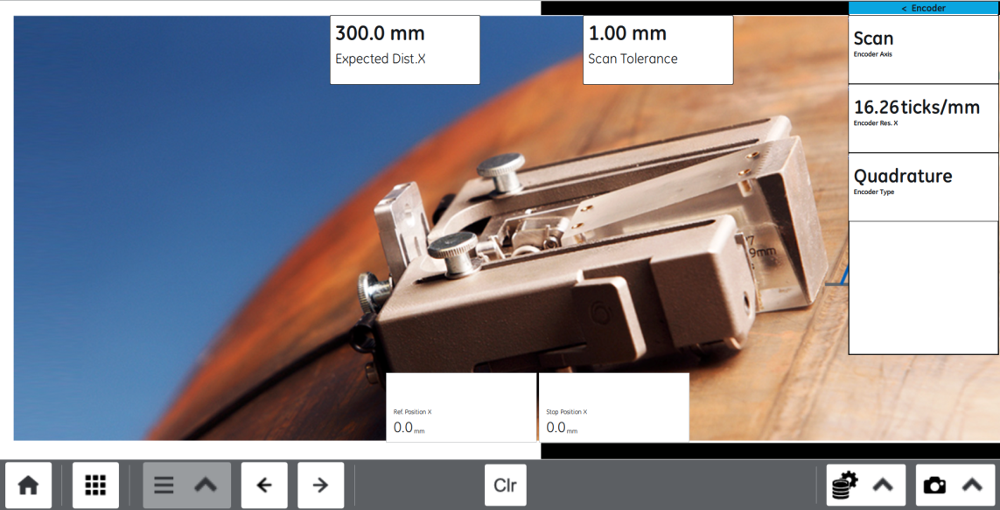
7.1. MỤC TIÊU
Đảm bảo máy ghi nhận đúng quãng đường di chuyển của bộ quét.
7.2. THIẾT LẬP VÀ THỰC HIỆN
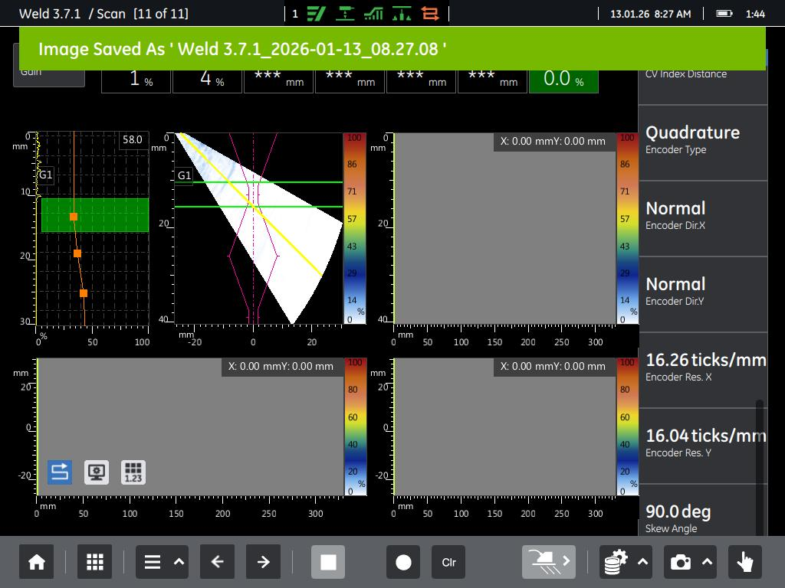
Vào menu Encoder.
Expected Dist X: Nhập khoảng cách thực tế sẽ di chuyển (Ví dụ: 200mm).
Scan Tolerance: Sai số của hiệu chuẩn Encoder
Khai báo cài đặt cho Encoder:
Encoder Axis = “Scan/ Index/ Both”: Hướng di chuyển encoder khi hiệu chuẩn, thông thường chọn “Scan”
Scan: Hiệu chuẩn encoder bằng cách di chuyển quét một đoạn cho trước.
Index: Hiệu chuẩn encoder theo chiều index (ví dụ chiều vuông góc với mối hàn). Áp dụng trong trường hợp sử dụng kiểu quét 2 chiều.
Both: Kết hợp cả 2 kiểu trên.
Encoder Type” = “Directional/ Quadrature”: Loại encoder được sử dụng
Encoder Type: Quadrature (2 chiều) hoặc Directional (1 chiều).
Thao tác:
Màn hình hiển thị thông báo “Move the scanner to it’s origin and hit the calibration icon”
Đặt bộ quét về vị trí 0. Nhấn biểu tượng  để bắt đầu.
để bắt đầu.
Di chuyển bộ quét đúng quãng đường đã nhập.
Nhấn biểu tượng 
Phần mềm sẽ tính toán và hiển thị kết quả độ phân giải quét của Encoder tại “Encoder Res. X”
Kéo ngược bộ quét về 0 để kiểm tra sai số.
Khi sai số hiệu chuẩn encoder được thỏa mãn, nhấn chọn  để chấp nhận kết quả hiệu chuẩn và màn hình hiển thị thông báo “The scanner is now calibrated and within tolerance”
để chấp nhận kết quả hiệu chuẩn và màn hình hiển thị thông báo “The scanner is now calibrated and within tolerance”
Nếu giá trị sai số vượt quá mức cho phép, thực hiện hiệu chuẩn lại theo trình tự các bước trên.
KHỐI 8 – THIẾT LẬP THÔNG SỐ QUÉT & LƯU FILE
KHỐI 8 – THIẾT LẬP THÔNG SỐ QUÉT & LƯU FILE
8.1. THÔNG SỐ QUÉT (SCAN SETUP)
Phân loại: các mục dưới đây thuộc NHÓM THÔNG SỐ QUÉT (Scan Setup).
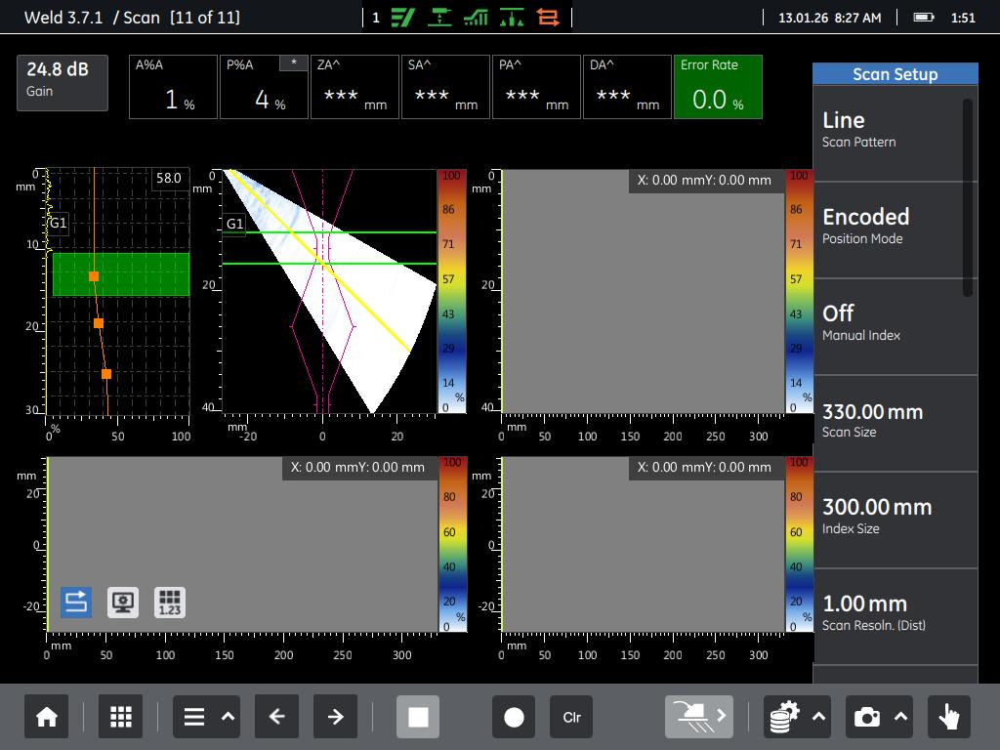

Thông số | Giá trị/Thiết lập | Giải thích |
Scan Pattern | Line | Quét đường thẳng. |
Position Mode | Encoded | Dùng encoder ghi vị trí. |
Manual Index | Off | Tắt nhập index thủ công khi dùng encoder. |
Scan Size | Theo chiều dài mối hàn | Chiều dài hành trình quét. |
Active Scan Size | Theo Scan Size | Chiều dài vùng dữ liệu hiển thị/ghi nhận. |
Scan Resoln.(Dist) | Theo yêu cầu kỹ thuật | Độ phân giải quét theo khoảng cách. |
Index Overlap | Theo yêu cầu | Tỷ lệ chồng lấp giữa các đường index. |
Index Distance | Theo thiết lập raster | Bước dịch index khi quét raster. |
Global Gain | Điều chỉnh khi cần | dB cộng thêm trong quá trình quét. |
Range Start / Range End | Đồng nhất giữa các luật phát | Nếu dùng nhiều luật phát, nên đặt cùng Range Start. |
8.2. THÔNG SỐ MỐI HÀN (PART SETUP)
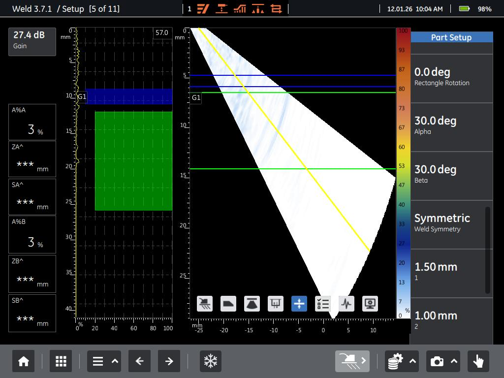
Phân loại: các mục dưới đây thuộc NHÓM THÔNG SỐ CÀI ĐẶT MỐI HÀN (Part Setup).
Thông số (Weld) | Giá trị/Thiết lập | Giải thích |
Overlay Type | Biên dạng mối hàn | Chọn V-weld / J-weld… tùy cấu hình mối hàn. |
Part Thickness | Theo chiều dày thực tế | Chiều dày vật kiểm/mối hàn. |
Index Offset | Theo layout đầu dò | Khoảng cách từ mũi nêm đến tâm mối hàn. |
Wave Type | Shear/Longitudinal… | Dạng sóng sử dụng. |
Velocity L | m/s | Vận tốc sóng dọc. |
Velocity N | m/s | Vận tốc sóng ngang. |
Skew Angle | 90° / 270° | Góc định hướng đầu dò so với mối hàn (trái/phải). |
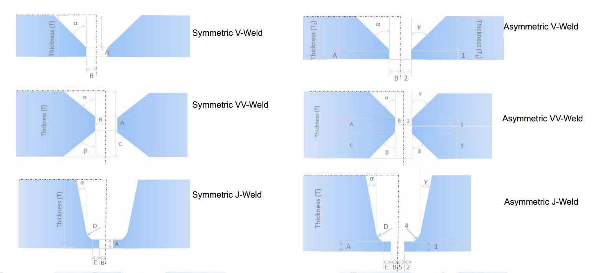
Kí hiệu thông số biên dạng mối hàn
8.3. LƯU CẤU HÌNH (SAVE SETTING)
Nhấn biểu tượng  -> Chọn Save Setting.
-> Chọn Save Setting.
Đặt tên File -> Nhấn Save.
KHỐI 9 – QUÉT MỐI HÀN, TOFD & QUẢN LÝ DỮ LIỆU
KHỐI 9 – QUÉT MỐI HÀN, TOFD & QUẢN LÝ DỮ LIỆU
9.1. QUÉT MỐI HÀN VÀ LƯU DỮ LIỆU
Trình tự các nút bấm trên màn hình khi quét:
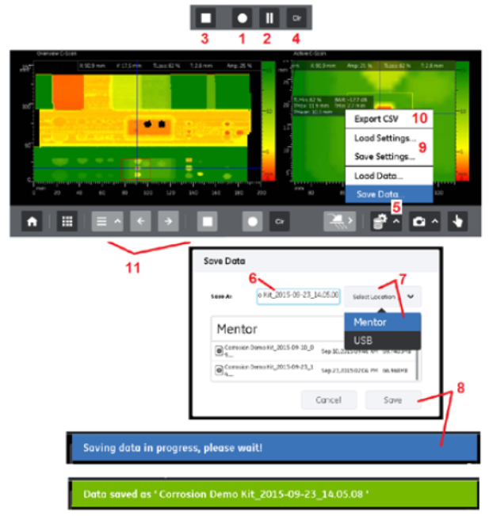
Trình tự thực hiện quét mối hàn
Nút bấm | Chức năng |
Record | Nhấn chọn để kích hoạt ghi nhận dữ liệu quét. Sau đó bắt đầu di chuyển bộ quét để kiểm tra mối hàn. |
Pause | Trong quá trình quét, nhấn chọn để tạm dừng ghi nhận dữ liệu và tiếp tục ghi nhận dữ liệu khi nhấn chọn “Record” (phím 1) |
Stop | Kết thúc quá trình ghi. |
Clr | Xóa dữ liệu vừa ghi (làm lại). |
Save Data | Lưu dữ liệu vừa ghi nhận |
Load Data | Tải lại dữ liệu đã được ghi nhận và lưu từ trước |
Save Setting | Lưu file cài đặt đã được hiệu chuẩn |
Load Setting | Mở file cài đặt đã được lưu từ trước |
9.2. THIẾT LẬP CÀI ĐẶT NHIỀU LUẬT PHÁT
Thiết bị Mentor UT cho phép thực hiện kiểm tra mối hàn với nhiều luật phát trên một hoặc hai đầu dò PAUT khác nhau.
Thiết lập cài đặt nhiều luật phát cho ứng dụng bằng phần mềm “Mentor Create”. Ứng dụng có thể được thiết lập từ đầu hoặc điều chỉnh từ các ứng dụng có sẵn có số lượng luật phát mong muốn như “2 Sided Weld”, “3-Group Weld”,...
Khi số lượng luật phát đã được thiết lập, không thể thực hiện xóa luật phát trên thiết bị Mentor UT.
Để hiển thị một hoặc nhiều luật phát đồng thời trên màn hình, nhấn chọn  để mở cửa sổ cài đặt luật phát “Group Select”: chọn luật phát muốn hiển thị.
để mở cửa sổ cài đặt luật phát “Group Select”: chọn luật phát muốn hiển thị.
Quá trình hiệu chuẩn và lưu file cài đặt, dữ liệu quét được thực hiện tương tự mục 5.3.
9.3. KỸ THUẬT TOFD (TÓM TẮT)
Kỹ thuật TOFD (Time of Flight Diffraction) được thiết lập thông qua ứng dụng Mentor Create với các ứng dụng có sẵn hoặc điều chỉnh cho phù hợp với thực tế kiểm tra.
Các biểu tượng để mở các cửa sổ khai báo đầu dò, nêm, đối tượng kiểm tra như ở mục 5.3
Các bước hiệu chuẩn cho kỹ thuật TOFD bao gồm: Hiệu chuẩn PCS và Hiệu chuẩn độ nhạy
Hiệu chuẩn PCS (Probe center separation): Khoảng cách giữa điểm phát chùm âm của hai đầu dò phát và thu tín hiệu.

Hiệu chuẩn PCS
“Cal Block Thickness”: Nhập giá trị chiều dày mẫu hiệu chuẩn
“PCS”: Nhập giá trị PCS theo tính toán
PCS = 4/3 * (chiều dày mẫu) * tan(góc đầu dò)
Cài đặt chùm âm kiểm tra: “Longitudinal wave” (Sóng dọc)
Trên màn hình hiển thị thông báo:
“Place the probe on calibration block “25.00mm” and press calibration button”
Đặt hai đầu dò phát và thu theo giá trị PCS
Di chuyển cổng A đến vị trí xung mặt và cổng B đến vị trí xung đáy như hình 19.
Nhấn chọn biểu tượng  để hiệu chuẩn
để hiệu chuẩn
Ứng dụng tự động tính toán giá trị PCS dựa trên khoảng cách xung ghi nhận và so sánh với thực tế khoảng cách giữa hai đầu dò.
Nếu giá trị PCS thỏa mãn, màn hình sẽ hiển thị thông báo “PCS is successfully calibrated” và biểu tượng PCS chuyển trạng thái sang màu xanh lá cây.
Nếu giá trị PCS không đạt yêu cầu, kiểm tra lại các thông số, khoảng cách giữa hai đầu dò và thực hiện lại các bước hiệu chuẩn như trên.
Hiệu chuẩn Độ nhạy: Đặt đầu dò, di chuyển cổng bao xung mặt, máy tự động điều chỉnh biên độ.
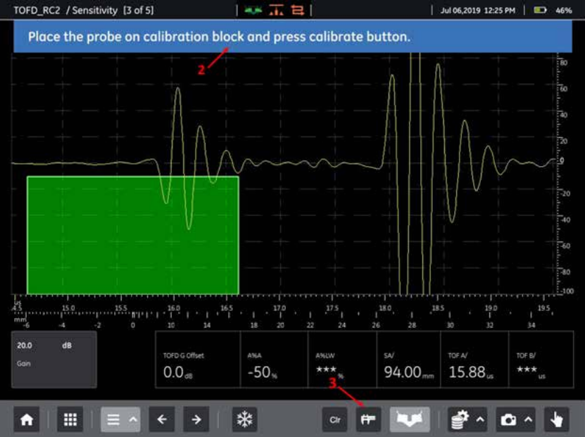
Trên màn hình hiển thị thông báo:
“Place the probe on calibration block and press calibration button”
Đặt hai đầu dò phát và thu theo giá trị PCS
Di chuyển cổng A đến vị trí xung mặt như hình 19.
Nhấn chọn biểu tượng  để hiệu chuẩn.
để hiệu chuẩn.
Ứng dụng tự động tính toán, màn hình sẽ hiển thị thông báo “Sensitivity calibration completed successfully” và biểu tượng sensitivity chuyển trạng thái sang màu xanh lá cây.
9.4. SAO LƯU VÀ GIẢI ĐOÁN DỮ LIỆU
1. Sao lưu ra USB:

Nhấn để mở menu.
Cài đặt hệ thống của máy.
Quản lý dữ liệu.
Kết nối Mentor UT với máy tính.
Kết nối với InspectionWorks, dùng khi có internet.
Shut down máy.
Trở lại màn hình chính.
Nhấn vào quản lý dữ liệu để tiến hành sao lưu, chọn ứng dụng đã lưu file.
Nhấn “Select Location” > USB drive > chọn nhưng file cần sao lưu > nhấn để copy dữ liệu vào USB.
Nhấn vào “Rename” và biểu tượng thùng rác để đổi tên và xóa dữ liệu.
Giải đoán dữ liệu:
Sau khi quét xong nhấn kết thúc ghi nhận dữ liệu, lúc này mọi sự dịch chuyển đầu dò và Encoder đều không ảnh hưởng đến dữ liệu quét. Sau đó lưu file dữ liệu đã quét để giải đoán hoặc dung các công cụ có sẵn trên máy để giải đoán.
Việc giải đoán sẽ dựa vào B,C,S-scan và con trỏ trên màn hình

Bật chế độ Grid View khi màn hình bị nhòe

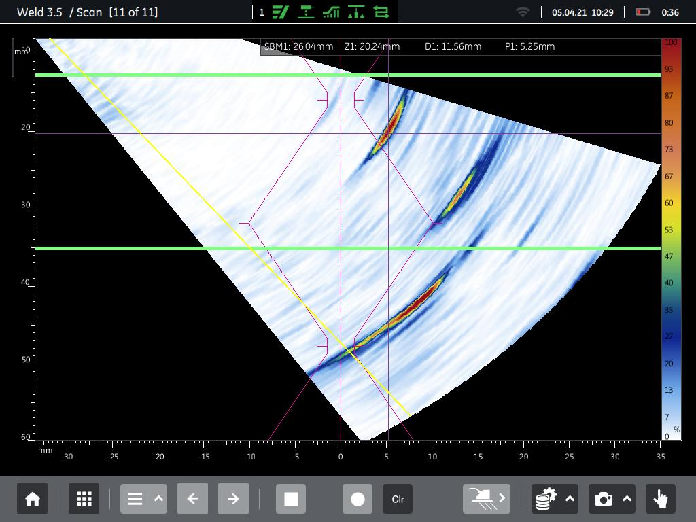
Các thông số để giải đoán trên màn hình
Thông số | Ý nghĩa |
Len | Độ dài của hộp dùng cho sizing |
H | Chiều cao của hộp theo chiều sâu dùng cho sizing |
W | Chiều rộng của hộp dùng cho sizing |
Max Amp | Biên độ cao nhất của xung trong hộp |
Z | Độ sâu của chỉ thị có biên độ cao nhất |
D | Độ sâu theo chiều dày mẫu của chỉ thị có biên độ cao nhất |
S | Quãng đường âm của chỉ thị có biên độ cao nhất |
A%r | Biên độ của chỉ thị có biên độ cao nhất so sánh với TCG |
Kết thúc tài liệu hướng dẫn.